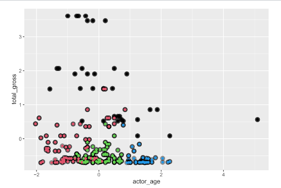

Background
I took CSC 442 Introduction to Data Science in Spring 2024. This course explored the data science lifecycle, including data collection, data wrangling and cleaning, data mining, data analysis, and data visualization. Practical applications of course content was taught in R.
Final project
The parameters of the final course project were to find two large data sets and find “something interesting” about the data. We could use any technique or any dataset.
Defining success of high grossing movies of 2023
I worked with two teammates (A. Carlson, A. Godwin) on Top 200 Movies of 2023 Dataset and IMDB Movie Dataset (1938-Dec 2023).
As a team, we had the same problem statement: “Exploring which factors affect a movie’s success in box office revenue.” However, although we did work on the same datasets, the majority of our work was performed individually.
I decided to explore “Is there a relationship between the demographic variables of actors (like age) and success (total gross) of movies in 2023?”
My analysis was written in R, using Posit Cloud. In order to support my task, I brought in an additional dataset: IMDb Non-Commerical Datasets.
Process and results
- The team cleaned the original two datasets (Top 200 Movies of 2023 Dataset, IMDB Movie Dataset) together.
This included:
- converting numerical attributes from strings to numeric values
- converting categorical attributes (PG rating, movie distributor, etc) into factors
- dropping outliers in total gross revenue
- Since I wanted to use a supplemental dataset, I had to wrangle that as well. This step took the longest, since the supplemental dataset was very large. The supplemental dataset also had a lot of repeat values or special characters, which had to be handled separately.
- I went into the analysis without a specific outcome in mind, so I decided to use clustering (an unsupervised approach). I started with hierarchical clustering, producing a very dense dendrogram. I ended up choosing to prune at four clusters, since this produced useful patterns on my final plot.
Visualization
In the final lot, the clusters are mostly grouped by age. There is a group that is not grouped by age, which could be defined as the “top performing” actors. It is difficult to determine what makes these actors different from others, so more demographic data would be needed for a more thorough conclusion.
Axes in the plot are measured in terms of standard deviations from the mean.
